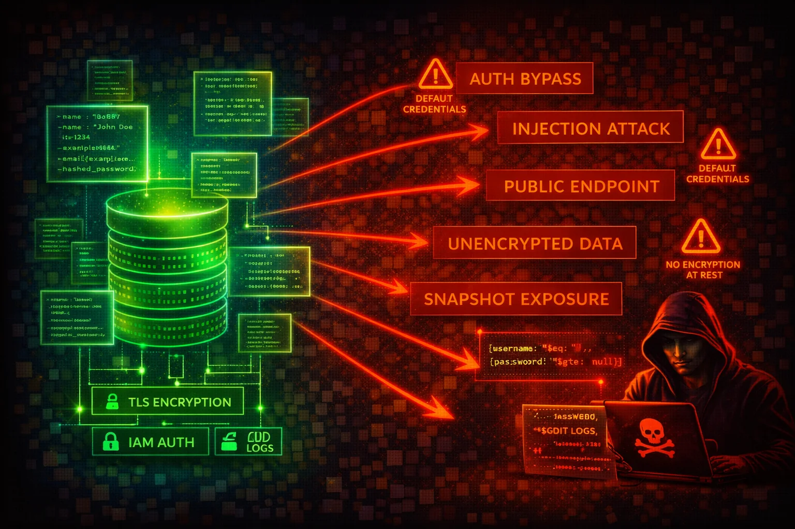

Amazon DocumentDB is a managed document database compatible with MongoDB wire protocol. It stores structured application data (user records, session data, financial documents). Snapshots can be shared publicly, TLS and audit logging are configurable parameters that can be disabled, and encryption at rest cannot be enabled after cluster creation.
DocumentDB stores structured application data accessible via MongoDB wire protocol on port 27017. Clusters run exclusively inside a VPC. Supports MongoDB 4.0, 5.0, and 8.0 compatibility modes.
Manual snapshots can be shared publicly or cross-account. TLS and audit logging are parameters that can be disabled. Encryption at rest is permanent -- if created unencrypted, it cannot be changed.
DocumentDB stores application-level structured data (PII, credentials, financial records). Cluster-wide settings mean all databases share the same auth, TLS, and encryption. Audit logging is disabled by default. Data-plane operations are not in CloudTrail.
aws docdb describe-db-clusters \
--filter Name=engine,Values=docdbaws docdb describe-db-cluster-parameters \
--db-cluster-parameter-group-name <param-group>aws docdb describe-db-cluster-snapshotsaws docdb describe-db-cluster-snapshot-attributes \
--db-cluster-snapshot-identifier <snapshot-id>aws docdb describe-db-cluster-parameter-groupsaws docdb modify-db-cluster-snapshot-attribute \
--db-cluster-snapshot-identifier <snap> \
--attribute-name restore \
--values-to-add <attacker-account-id>aws docdb modify-db-cluster-snapshot-attribute \
--db-cluster-snapshot-identifier <snap> \
--attribute-name restore \
--values-to-add allaws docdb modify-db-cluster-parameter-group \
--db-cluster-parameter-group-name my-params \
--parameters "ParameterName=tls,ParameterValue=disabled,ApplyMethod=pending-reboot"aws docdb modify-db-cluster \
--db-cluster-identifier my-cluster \
--no-deletion-protection{
"Effect": "Allow",
"Action": "rds:*",
"Resource": "*"
}DocumentDB uses rds: namespace. Grants full control including snapshots, sharing, deletion, and parameter changes.
{
"Effect": "Allow",
"Action": [
"rds:DescribeDBClusters",
"rds:DescribeDBInstances",
"rds:DescribeDBClusterSnapshots",
"rds:ListTagsForResource"
],
"Resource": "arn:aws:rds:*:*:cluster:my-docdb-*"
}Read-only access scoped to specific DocumentDB clusters
{
"Effect": "Deny",
"Action": "rds:ModifyDBClusterSnapshotAttribute",
"Resource": "*",
"Condition": {
"StringEquals": {
"rds:AddRestoreAccountId": "all"
}
}
}Prevents making DocumentDB snapshots public
Use custom parameter group with tls=tls1.2+ or tls=tls1.3+. Never use tls=enabled (allows TLS 1.0).
aws docdb modify-db-cluster-parameter-group \
--db-cluster-parameter-group-name my-params \
--parameters "ParameterName=tls,ParameterValue=tls1.2+,ApplyMethod=pending-reboot"Enable DDL and DML auditing and export to CloudWatch Logs.
aws docdb modify-db-cluster-parameter-group \
--db-cluster-parameter-group-name my-params \
--parameters "ParameterName=audit_logs,ParameterValue=enabled,ApplyMethod=immediate"Prevent accidental or malicious cluster deletion.
aws docdb modify-db-cluster --db-cluster-identifier my-cluster --deletion-protectionApply SCP to deny ModifyDBClusterSnapshotAttribute with values-to-add all at org level.
Create clusters with CMK (not aws/rds) to enable custom key policies and cross-account control.
Configure Secrets Manager automatic rotation. Never embed credentials in application code.